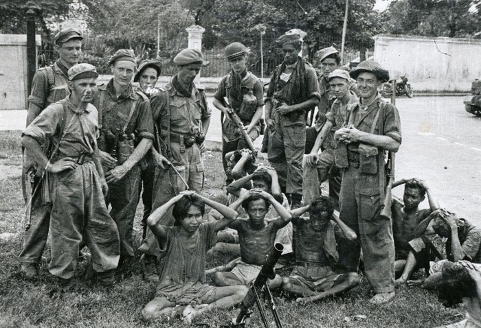
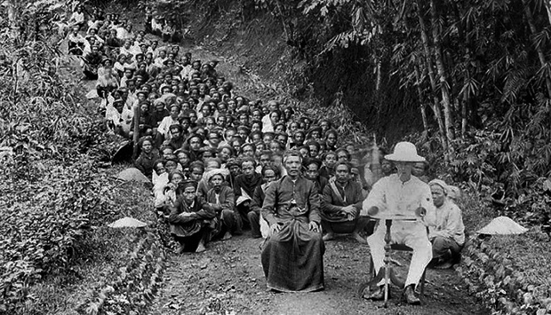
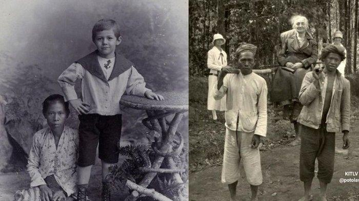
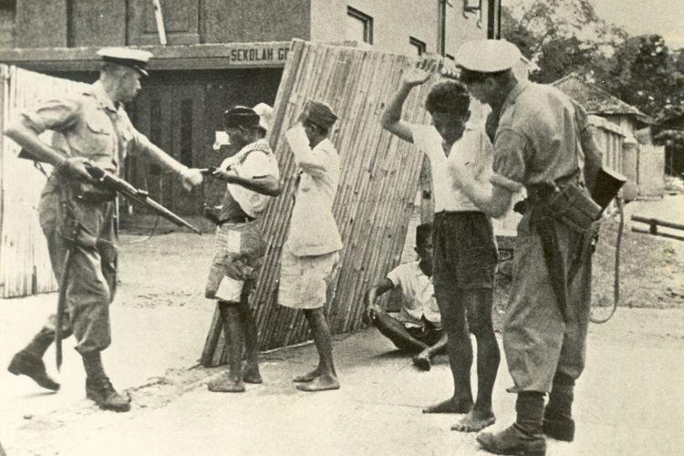
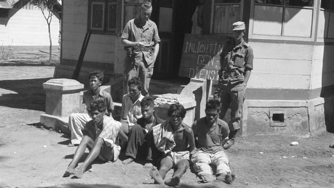
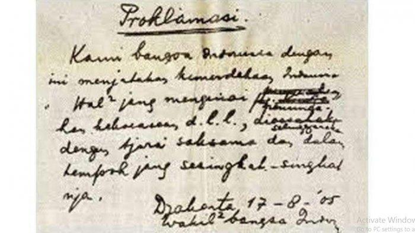
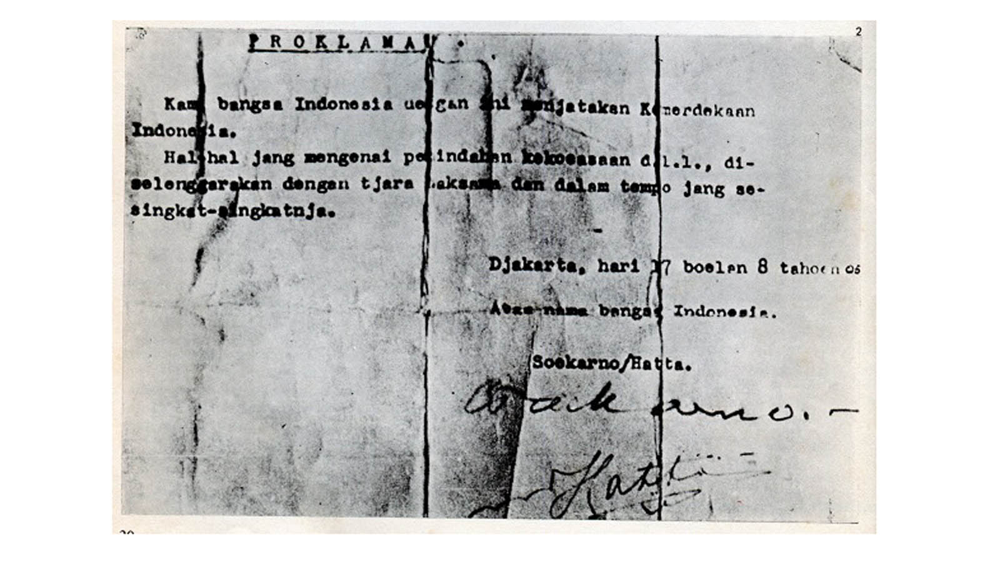

10.00 pagi


Museum Perumusan Naskah Proklamasi

Naskah Proklamasi Kemerdekaan Republik Indonesia
Naskah Proklamasi Ontentik
Rumah Bung Karno di Pegangsaan Timur No 56

Tugu Proklamasi di kompleks Taman Proklamasi di Jalan Proklamasi, Jakarta Pusat